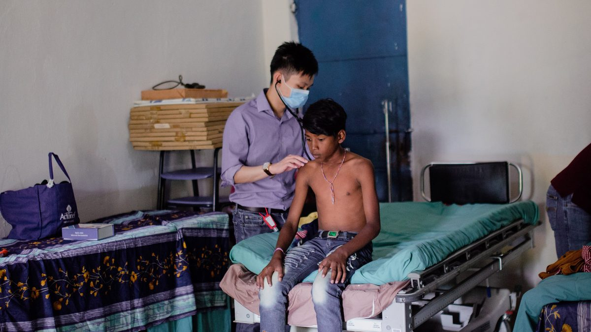

The Programme — Training Sites
Eight organisations, and what you do inside each.
Residents rotate through more than ten sites across these eight organisations. A typical resident sees between ten and twelve of them across the sixty months.
How many a given resident sees depends on the exit pathway taken, on the advanced rotations chosen in senior residency, and on which postings are open in a given year. Senior residency requires advanced rotations at two or more sites in different organisations, so the floor is set by the training requirements; everything above it is arranged individually.
No other residency in Singapore trains its residents inside eight different employers.
Duration, the two exit pathways and the list of participating organisations are as published by NUHS. The comparison against other Singapore residencies is the programme’s own, drawn from published rotation lists.
The eight participating organisations
Two ministries beyond Health, a statutory board, a uniformed service and all three healthcare clusters.
| Organisation | Sector | Typical year | What you do there |
|---|---|---|---|
| Ministry of Health | Ministry | Years 2–3, junior residency | The Ministry promotes good health, reduces illness and secures access to affordable healthcare. For a resident that means the policy, financing and regulatory side of the system, and national programmes such as the childhood immunisation schedule and Nutri-Grade, which the Ministry gazetted jointly with the Health Promotion Board. |
| Health Promotion Board | Statutory board | Years 1–2, junior residency | The lead agency for national health promotion and disease prevention programmes. Screening uptake, behavioural intervention, and food and beverage measures such as Nutri-Grade labelling, which it gazetted jointly with the Ministry of Health. |
| Ministry of Manpower | Ministry | Years 3–4 | The Occupational Safety and Health Division, which promotes workplace safety and health at national level. Setting and enforcing workplace exposure standards, including the permissible noise exposure limits under the Workplace Safety and Health (Noise) Regulations that decide how long a worker may stay on a floor. |
| Ministry of Home Affairs | Ministry | Years 4–5, senior residency | Home Team Medical Services, which builds in-house medical capability to keep officers operationally ready and to promote healthy behaviours across the Home Team — police, civil defence, immigration and prisons. The population you are responsible for is the workforce itself. |
| Singapore Armed Forces | Uniformed service | Years 4–5, senior residency | The SAF Medical Corps provides health care for SAF personnel, protects their health and maintains their combat performance: medical fitness standards, heat injury and training load, force health protection for a largely conscript population. Since 2024 the Corps has held a strategic partnership with NUHS and the Saw Swee Hock School of Public Health covering population health research and policy evaluation for servicemen. |
| National Healthcare Group | Healthcare cluster | Years 1–2, junior residency | Population health at cluster scale — responsibility for a defined resident population, not only for the patients who present. The cluster frames its aim as building healthier, more resilient communities and adding years of healthy life. It now writes its own name as NHG Health. |
| SingHealth | Healthcare cluster | Years 2–3, junior residency | The same cluster-scale work against a different population: SingHealth is the regional health manager for Eastern Singapore under Healthier SG, so the catchment, the provider network and the presenting problems all differ from those of the other two clusters. |
| National University Health System | Healthcare cluster, and Sponsoring Institution | Year 1, and again in senior residency | The Sponsoring Institution, and an academic health system — teaching, research supervision, and the health services research that turns a routine dataset into a published evaluation. Ng Teng Fong General Hospital, within NUHS, publishes what its Preventive Medicine practicum covers: disease control and epidemiology, health policy and administration, and health services research. |
Participating organisations as named on the NUHS programme page. Each description in the last column is drawn from that organisation’s own published account of its remit. The “typical year” column reflects the usual shape of the junior and senior structure and is not a posting guarantee: postings are arranged individually with the Programme Director each year.
What the breadth gives you
Four things the range of postings makes possible.
Both sides of the table
You write an exposure standard at the Ministry of Manpower, then you are the one applying it in a cluster or in the Armed Forces. Very few people in Singapore public health have sat on both sides of that document, and the ones who have are the ones asked to redraft it.
The same population, counted twice
National Healthcare Group and SingHealth do the same job for different populations. Working in both is how you learn to tell a real effect from an artefact of a particular catchment.
Instruments, not opinions
Nutri-Grade beverage labelling, the childhood immunisation schedule, permissible noise exposure limits, food establishment grading. Each of these is an instrument somebody had to draft, defend against objection, and then evaluate — and sometimes retire: the Singapore Food Agency replaced the old A-to-D hygiene grades with its Safety Assurance for Food Establishment framework on 19 January 2026. Rotating this widely means you watch that happen from the inside more than once.
A network across government by the time you finish
The posting ends; the colleagues do not. A resident who has worked inside two ministries, a statutory board, a uniformed service and two clusters finishes the programme knowing, by name, the people who will be their counterparts for the next thirty years. That is not a soft benefit — it is the difference between a proposal that moves and one that circulates.
Descriptions of the training model, not claims about any individual resident’s rotations. The senior residency requirement for advanced rotations at two or more sites in different organisations is as specified by the programme; everything above it varies by pathway and by year.
Photographs
From teaching sessions and site visits across the participating organisations.
Applicants ask what the working day looks like when it is not a ward — what a policy desk at a ministry looks like, what a site visit to a workplace looks like, what a cluster population health meeting looks like. Photographs answer that faster than any paragraph here can.


Photographs are published with the consent of the residents shown. Further images from ministry, statutory board and cluster postings are added to this page each intake year.
Applications for the July 2027 intake
Applications are made through the MOH Holdings eResidency portal. Registering to be interviewed by NUHS as Sponsoring Institution is a separate step, and it stays open eight days longer than the portal does — but the portal cannot be reopened or extended, so the portal is the deadline that ends your cycle.
eResidency portal: 1 to 24 September 2026.
Interview registration with NUHS: 1 September to 2 October 2026.
Apply for the July 2027 intake eResidency portal opens 1 September 2026
Not ready to apply? Write to A/Prof Jason Yap, Programme Director, at jasonyap@nus.edu.sg.
Contact
Three ways to reach the programme. Two current residents also take questions from applicants directly, without the Programme Office copied in.
Ask a current resident
For questions about the training itself, and what the five years are like day to day.
Dr Nadia Rahim and Dr Ezekiel Fong
Programme Director
A/Prof Jason Yap
jasonyap@nus.edu.sg
Programme Office
Ms Fanny Yik
fanny_fl_yik@nuhs.edu.sg
Ms Reena Riana
Reena_Riana_Bte_Jamil@nuhs.edu.sg
Programme Director and coordinator addresses as published on the NUHS programme page. General NUHS residency enquiries go to residency@nuhs.edu.sg. The Programme Office aims to reply within five working days.